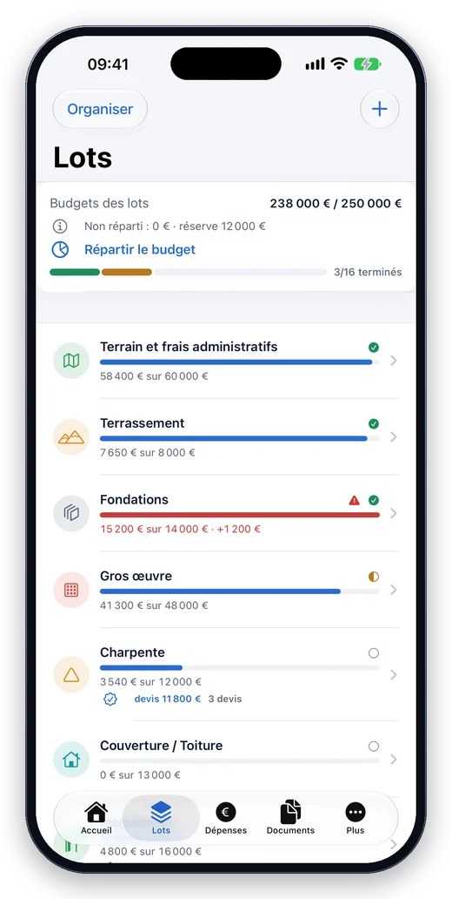
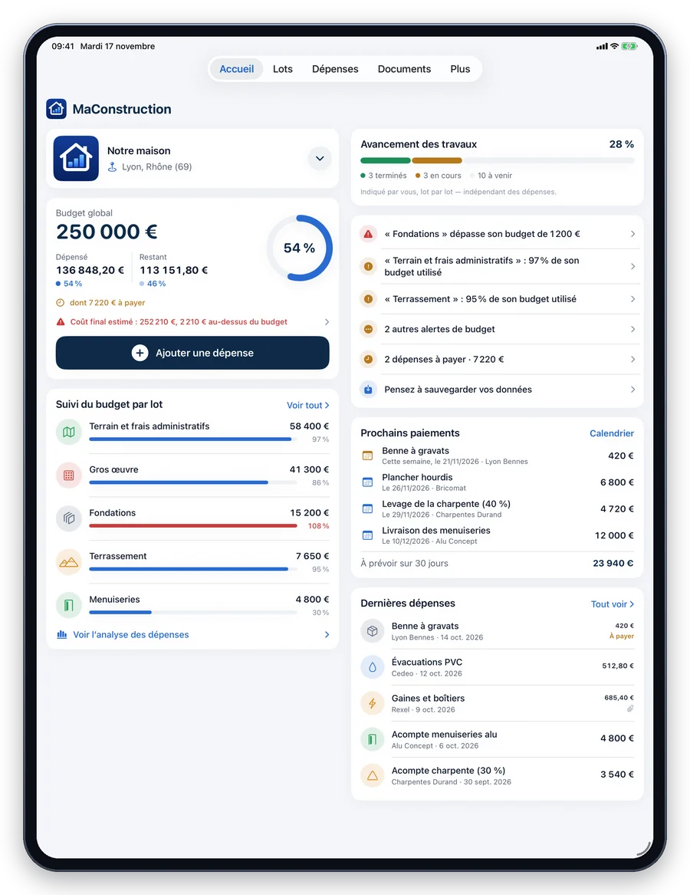

Nieuwbouw en verbouwing
Houd het budget van je bouwproject in de hand
Bouw je zelf, verbouw je of laat je bouwen? Uitgaven, facturen, offertes, aankopen en termijnen: volg je bouwproject in één oogopslag, alleen of samen, van de eerste factuur tot het einde van de werkzaamheden.
- Zonder registratie
- Beveiligde gegevens
- iPhone, iPad en Android
- Gratis versie beschikbaar

Nieuw: voor zelfbouwers
Gemaakt voor wie zelf bouwt
Koop je zelf je materialen, doe je een deel van het werk zelf en laat je de rest over aan vakmensen? Zes functies volgen je bouwproject zoals het echt verloopt.
Materiaal of arbeid
Elke uitgave wordt ingedeeld als materiaal, arbeid of overig. Je ziet in één oogopslag wat je materialen kosten en wat de vakmensen kosten.
Wie elke post uitvoert
Zelf, een vakman of allebei: geef per post aan wie het werk doet, en zie het in één oogopslag terug in de lijst.
Creditnota’s, retouren en terugbetalingen
Iets teruggebracht naar de winkel? Registreer de creditnota: het bedrag gaat af van het uitgegeven bedrag, van de post en van de leverancier. Het uitlezen van facturen herkent creditnota’s.
Uitgaven per leverancier
Hoeveel heb je uitgegeven bij elke winkel en elke vakman, en in hoeveel aankopen: handig om over korting te onderhandelen of te kiezen waar je koopt.
Wat je echt bespaart
Voor een post die je zelf uitvoert, vergelijk je je werkelijke uitgaven met de offerte van een vakman voor hetzelfde werk. Voorlopige besparing zolang de post loopt, gerealiseerde besparing zodra de post is afgerond. Zonder offerte geen schatting.
Aankooplijst en prijsvergelijking
Te kopen, besteld, ontvangen: noteer per artikel meerdere prijzen, met het artikelnummer, de link en de verzendkosten. De goedkoopste wordt uitgelicht, en met één tik wordt het een uitgave.
In Nederland wil ongeveer 20% van de huidige en potentiële woningkopers een eigen huis laten bouwen. (IBR-rapport voor RVO (2018), op basis van WoOn en Wira)
Beter dan een spreadsheet: alles zit in je broekzak, facturen inbegrepen.
Je hele bouwproject
Eén app, je hele budget
Gemaakt voor particulieren die bouwen of verbouwen: eenvoudig in het dagelijks gebruik, volledig wanneer het nodig is.


Scan je facturen in een paar seconden
Maak een foto of scan van een factuur: het bedrag, de datum en de leverancier worden vanzelf ingevuld. Jij controleert, jij slaat op.
- Facturen, offertes en foto’s op één plek
- 5 keer gratis uitlezen, onbeperkt met Plus
- Het uitlezen gebeurt op je telefoon

Zie budgetoverschrijdingen aankomen
De verwachte eindkosten tellen op wat je al hebt uitgegeven, wat er nog te betalen is op je geaccepteerde offertes en de budgetten van de posten die nog komen. Je weet vooraf of het budget toereikend is, en met hoeveel het dreigt te worden overschreden.

Vergelijk je offertes eenvoudig
Prijsverschillen, de goedkoopste offerte, de opmerkingen bij elke vakman: kies met kennis van zaken en zie meteen het effect op je budget.

Mis nooit meer een termijn
Een vervaldatum op elke te betalen factuur, en je eerstvolgende betalingen in het overzicht.
- Met Plus: aanbetalingen, tussentijdse betalingen en restbetalingen van elke offerte
- Betalingskalender en herinneringen

Orden je budget per post
Ruwbouw, dakconstructie, elektriciteit, loodgieterswerk… Elke post heeft zijn eigen budget, en overschrijdingen springen meteen in het oog. Een assistent helpt je om je budget te verdelen.

Al je bewijsstukken op één plek
Facturen, offertes en foto’s, gekoppeld aan je uitgaven en je posten. Met Plus: PDF-rapport van het bouwproject, Excel-export en export van alle facturen, klaar voor je bank, je boekhouder of een terugbetalingsaanvraag.

Delen met je partner
Beheer je bouwproject samen
Nodig je partner uit met een simpele QR-code. Jullie voeren allebei gegevens in en alles wordt automatisch gesynchroniseerd, op iPhone en op Android.
- Zonder account of e-mail
- End-to-end versleuteld: niemand anders, zelfs wij niet, kan je bouwproject lezen
- Inbegrepen bij Plus; je partner doet gratis mee
Je gegevens
Je gegevens blijven van jou
Zonder registratie
Geen account aanmaken, geen e-mailadres nodig.
Op je telefoon
Je bouwprojecten blijven op je apparaat en in je eigen iCloud- of Google-back-up.
Samen, versleuteld
Delen met je partner is end-to-end versleuteld; de server kan niets lezen.
Zonder advertenties
Geen advertenties, geen profiel, geen doorverkoop. Alleen anonieme statistieken als je daarmee instemt.
Ook op iPad
Een groot scherm om je hele budget in één keer te zien: overzicht in twee kolommen, ruime lijsten, staand en liggend.

Prijzen
Begin gratis
Met de gratis versie volg je één project, zonder tijdslimiet. Stap over op Plus wanneer je het nodig hebt.
Gratis versie
Gratis
Om één bouwproject te volgen, zonder tijdslimiet.
- Eén project, met zijn posten en zijn budget
- Uitgaven, facturen, offertes en foto’s
- Materiaal, arbeid, creditnota’s en retouren
- Wie elke post uitvoert
- Budgetwaarschuwingen en opsporen van dubbele invoer
- 5 keer automatisch facturen uitlezen
- Deelnemen aan het bouwproject van je partner
- Volledige back-up
Stenen & Centen Plus
Per jaar of levenslang
Jaarabonnement of eenmalige aankoop voor altijd. Prijzen staan in de App Store en Google Play. Het abonnement is op elk moment opzegbaar.
- Onbeperkt projecten
- Onbeperkt automatisch facturen uitlezen
- Verwachte eindkosten en offertevergelijking
- Aankooplijst en prijsvergelijking
- Wat je bespaart door het zelf te doen
- Gedetailleerde analyse en uitgaven per leverancier
- Betalingsschema’s, kalender en herinneringen
- Bouwproject delen met je partner
- Vakmensen, verzekeringen en garanties
- PDF-rapport, Excel-export en export van de facturen
Veelgestelde vragen
Waar worden mijn gegevens opgeslagen?
Op je telefoon, en in je eigen iCloud-back-up (iPhone, iPad) of Google-back-up (Android). Je hebt geen account nodig.
Mijn partner heeft een Android-telefoon en ik een iPhone: werkt dat?
Ja. Delen met je partner werkt tussen iPhone en Android. Je partner scant de QR-code van de uitnodiging met de camera. Zonder de app gaat je partner eerst naar de App Store of Google Play, daarna wordt het bouwproject toegevoegd.
Ik doe een deel van het werk zelf: is de app iets voor mij?
Ja. Geef aan wie elke post uitvoert, splits materiaal en arbeid, registreer je retouren naar de winkel en vergelijk met Plus je aankoopprijzen en je besparingen met de offertes van vakmensen.
Stuurt het uitlezen van facturen mijn facturen ergens naartoe?
Nee. Het automatisch uitlezen gebeurt op je telefoon. Er wordt geen enkele factuur naar een externe dienst gestuurd om te worden uitgelezen.
Hoe zeg ik het abonnement op?
iPhone: Instellingen › je naam › Abonnementen. Android: Google Play › Betalingen en abonnementen › Abonnementen. Een levenslange aankoop hoef je niet op te zeggen.
Je bouwproject verdient een budget onder controle
Gratis, zonder registratie, op iPhone, iPad en Android.